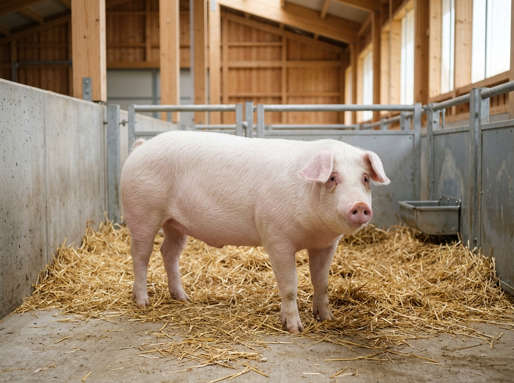
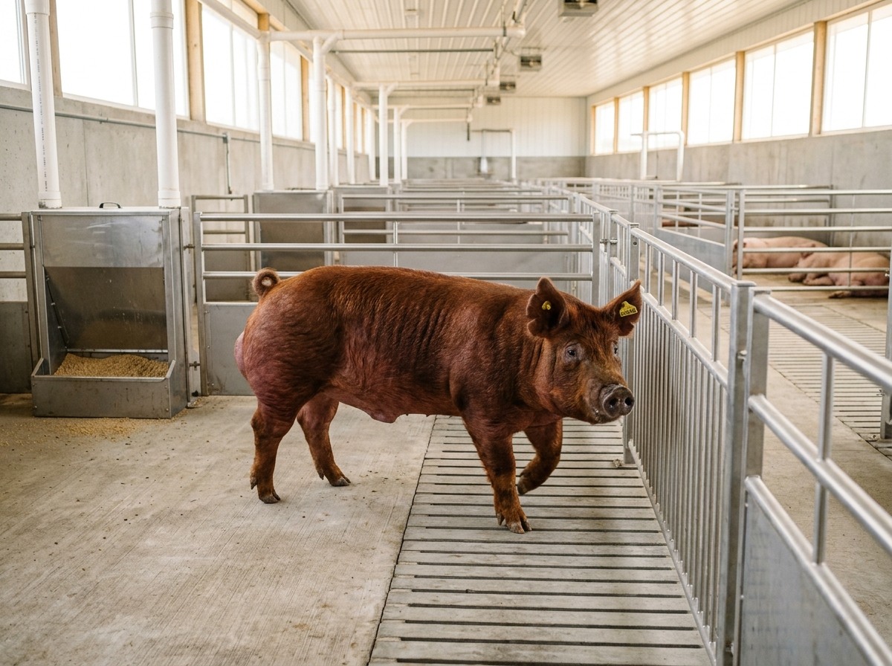
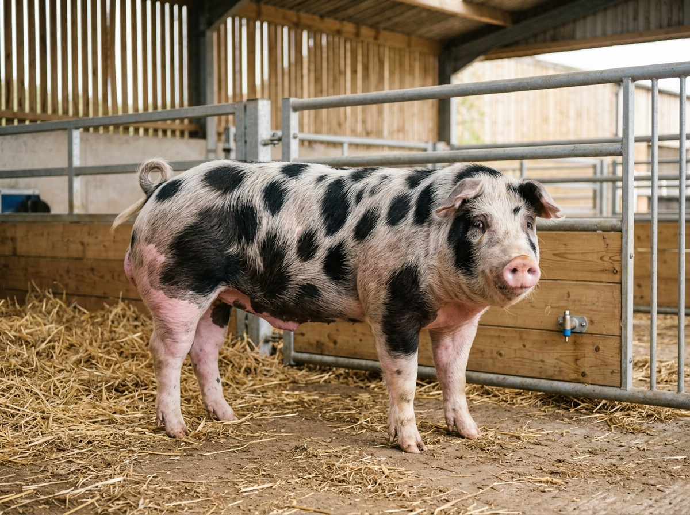
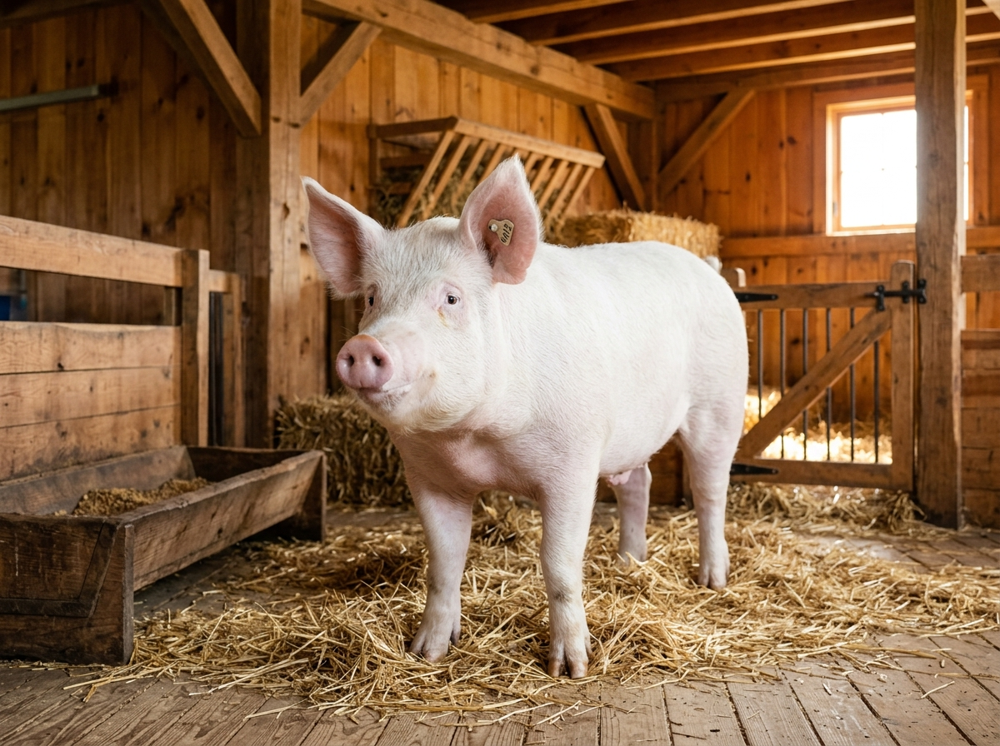

Línea MaternalRaza insigne reconocida mundialmente por su excelente capacidad reproductiva, temperamento dócil, rápido crecimiento y alto rendimiento en canal.

Marmoleo PremiumDestacada por su piel rojiza y por producir carne de extraordinaria jugosidad con marmoleo intramuscular superior, gran resistencia y desarrollo muscular.

Máxima Carne MagraRaza especializada en la producción de carne magra de alto valor comercial, reconocida por sus lomos pronunciados y escaso contenido graso.

Gran MadreConocida como la 'Raza Madre', combina una talla prominente, orejas erguidas, excelente fortaleza ósea y habilidades de crianza excepcionales.